Graphs of Exponential Functions
Learning Objectives
- Graph exponential functions (IA 10.2.1).
- Function transformations (exponential) (CA 3.5.1-3.5.5).
Objective 1: Graph exponential functions (IA 10.2.1).
Graph exponential functions.
On the same coordinate system graph and
Solution
We will use point plotting to graph the functions.
![This table has seven rows and five columns. The first row is header row and reads x, f of x equals 2 to the x power, (x, f of x), g of x equals 2 to the x plus 1 power, and (x, g of x). The second row reads negative 2, 2 to the negative 2 power equals 1 divided by 2 squared which equals 1 over 4, (negative 2, 1 over 4), 2 to the negative 2 plus 1 power equals 1 divided by 2 to the first power which equals 1 over 2, (negative 2, 1 over 2). The third row reads negative 1, 2 to the negative 1 power equals 1 divided by 2 to the first power which equals 1 over 2, (negative 1, 1 over 2), 2 to the negative 1 plus 1 power equals 2 to the 0 power which equals 1, (negative 1, 1). The fourth row reads 0, 2 to the 0 power equals 1, (0, 1), 2 to the 0 plus 1 power equals 2 to the 1 power which equals 2, (0, 2). The fifth row reads 1, 2 to the 1 power equals 2, (1, 2), 2 to the 1 plus 1 power equals 2 to the second power which equals 4, (1, 4). The sixth row reads 2, 2 to the 2 power equals 4, (2, 4), 2 to the 2 plus 1 power equals 2 to the third power which equals 8, (2, 8). The seventh row reads 3, 2 to the 3 power equals 8, (3, 8), 2 to the 3 plus 1 power equals 2 to the fourth power which equals 16, (3, 16).](../../media/CNX_IntAlg_Figure_10_02_008_img.jpg)
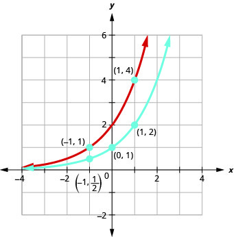
Looking at the graphs of the functions
and above, we see that adding one in the exponent caused a horizontal shift of one unit to the left. We can use this pattern to graph other functions using horizontal shifts.
On the same coordinate system graph and
Solution
We will use point plotting to graph the functions.
![This table has five rows and six columns. The first row is header row and reads x, f of x equals 3 to the x power, (x, f of x), g of x equals 3 to the x power minus 2, and (x, g of x). The second row reads negative 2, 3 to the negative 2 power equals 1 over 9, (negative 2, 1 over 9), 3 to the negative 2 power minus 2 equals 1 over 9 minus 2 which equals negative 17 over 9, (negative 2, negative 17 over 9). The third row reads negative 1, 3 to the negative 1 power equals 1 over 3, (negative 1, 1 over 3), 3 to the negative 1 power minus 2 equals 1 over 3 minus 2 which equals negative 5 over 3, (negative 1, negative 5 over 3). The fourth row reads 0, 3 to the 0 power equals 1, (0, 1), 3 to the 0 power minus 2 equals 1 minus 2 which equals negative 1, (0, negative 1). The fifth row reads 1, 3 to the 1 power equals 3, (1, 3), 3 to the 1 power minus 2 equals 3 minus 2 which equals 1, (1, 1). The sixth row reads 2, 3 squared equals 9, (2, 9), 3 squared minus 2 equals 9 minus 2 which equals 7, (2, 7).](../../media/CNX_IntAlg_Figure_10_02_010_img.jpg)
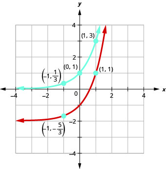
Looking at the graphs of the functions and , we see that subtracting 2 caused
vertical shift of down two units. Notice that the horizontal asymptote also shifted down 2 units. We can
use this pattern to help graph other functions with a vertical shift.
Practice Makes Perfect
On the same coordinate system graph and
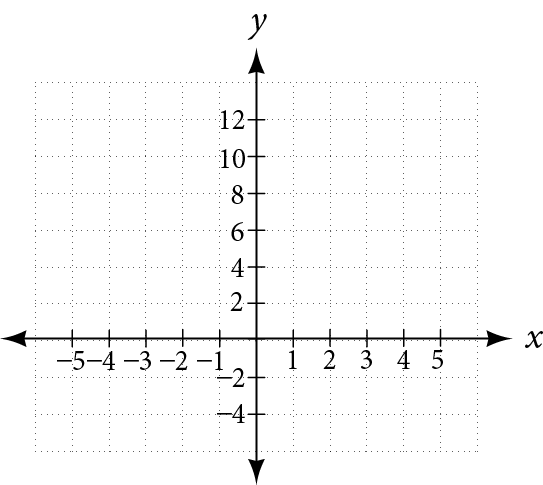
On the same coordinate system graph and
Objective 2: Function transformations (exponential). (CA 3.5.1-3.5.5)
Vertical and Horizontal Shifts:
Given a function , a new function where is a constant, is a vertical shift of the function . All the output values change by k units. If k is a positive, the graph will shift up. If k is negative, the graph will shift down.Given a function , a new function , where h is a constant, is a horizontal shift of the function . If h is positive, the graph will shift right. If h is negative, the graph will shift left.
Function transformations (exponential).
Graph
Solution
- Make a table for
- Add a column on the left for , by subtracting 2 from all the input values
- Add a column on the right by subtracting 3 from all the y-value
- Two outside columns have the points for the new graph
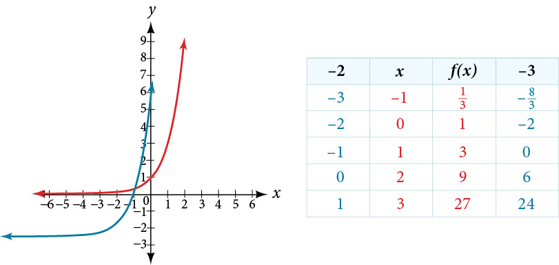
Practice Makes Perfect
Function transformations (exponential).
Graph
- ⓐ Given , reflect it about y-axis and write an equation of a new function below.
- ⓑ Given , reflect it about x-axis and write an equation of a new function below.
- ⓒ Given , shift the graph up 4 units and write an equation of a new function below.
- ⓓ Graph the equations found in parts a, b, and c on the coordinate system provided and check your work using a graphing utility.
As we discussed in the previous section, exponential functions are used for many real-world applications such as finance, forensics, computer science, and most of the life sciences. Working with an equation that describes a real-world situation gives us a method for making predictions. Most of the time, however, the equation itself is not enough. We learn a lot about things by seeing their pictorial representations, and that is exactly why graphing exponential equations is a powerful tool. It gives us another layer of insight for predicting future events.
Graphing Exponential Functions
Before we begin graphing, it is helpful to review the behavior of exponential growth. Recall the table of values for a function of the form whose base is greater than one. We’ll use the function Observe how the output values in Table 1 change as the input increases by
Each output value is the product of the previous output and the base, We call the base the constant ratio. In fact, for any exponential function with the form is the constant ratio of the function. This means that as the input increases by 1, the output value will be the product of the base and the previous output, regardless of the value of
Notice from the table that
- the output values are positive for all values of
- as increases, the output values increase without bound; and
- as decreases, the output values grow smaller, approaching zero.
Figure 1 shows the exponential growth function
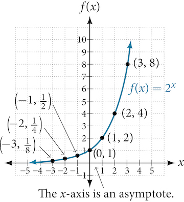
The domain of is all real numbers, the range is and the horizontal asymptote is
To get a sense of the behavior of exponential decay, we can create a table of values for a function of the form whose base is between zero and one. We’ll use the function Observe how the output values in Table 2 change as the input increases by
Again, because the input is increasing by 1, each output value is the product of the previous output and the base, or constant ratio
Notice from the table that
- the output values are positive for all values of
- as increases, the output values grow smaller, approaching zero; and
- as decreases, the output values grow without bound.
Figure 2 shows the exponential decay function,
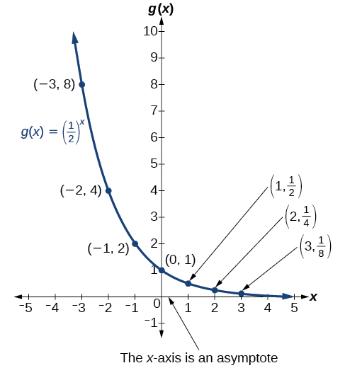
The domain of is all real numbers, the range is and the horizontal asymptote is
Sketching the Graph of an Exponential Function of the Form f(x) = bx
Sketch a graph of State the domain, range, and asymptote.
Solution
Before graphing, identify the behavior and create a table of points for the graph.
- Since is between zero and one, we know the function is decreasing. The left tail of the graph will increase without bound, and the right tail will approach the asymptote
- Create a table of points as in Table 3.
Table 3 Two rows and eight columns. The first row is labeled, “x”, and the second row is labeled, “f(x)=(0.25)^x”. Reading the columns as ordered pairs, we have the following values: (-3, 64), (-2, 16), (-1, 4), (0, 1), (1, 0.25), (2, 0.0625), and (3, Two rows and eight columns. The first row is labeled, “x”, and the second row is labeled, “f(x)=(0.25)^x”. Reading the columns as ordered pairs, we have the following values: (-3, 64), (-2, 16), (-1, 4), (0, 1), (1, 0.25), (2, 0.0625), and (3, 0.015625). - Plot the y-intercept, along with two other points. We can use and
Draw a smooth curve connecting the points as in Figure 4.
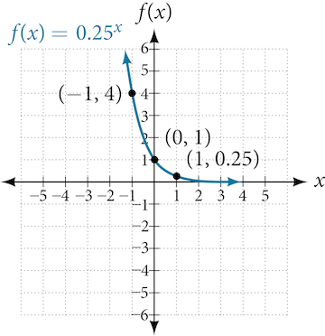
The domain is the range is the horizontal asymptote is
Graphing Transformations of Exponential Functions
Transformations of exponential graphs behave similarly to those of other functions. Just as with other parent functions, we can apply the four types of transformations—shifts, reflections, stretches, and compressions—to the parent function without loss of shape. For instance, just as the quadratic function maintains its parabolic shape when shifted, reflected, stretched, or compressed, the exponential function also maintains its general shape regardless of the transformations applied.
Graphing a Vertical Shift
The first transformation occurs when we add a constant to the parent function giving us a vertical shift units in the same direction as the sign. For example, if we begin by graphing a parent function, we can then graph two vertical shifts alongside it, using the upward shift, and the downward shift, Both vertical shifts are shown in Figure 5.
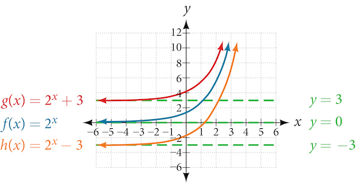
Observe the results of shifting vertically:
- The domain, remains unchanged.
- When the function is shifted up units to
- The y-intercept shifts up units to
- The asymptote shifts up units to
- The range becomes
- When the function is shifted down units to
- The y-intercept shifts down units to
- The asymptote also shifts down units to
- The range becomes
Graphing a Horizontal Shift
The next transformation occurs when we add a constant to the input of the parent function giving us a horizontal shift units in the opposite direction of the sign. For example, if we begin by graphing the parent function we can then graph two horizontal shifts alongside it, using the shift left, and the shift right, Both horizontal shifts are shown in Figure 6.
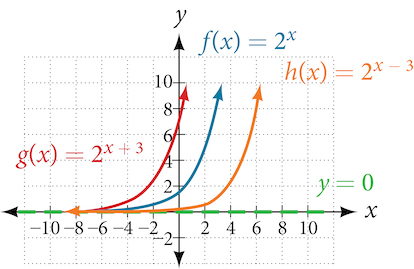
Observe the results of shifting horizontally:
- The domain, remains unchanged.
- The asymptote, remains unchanged.
- The y-intercept shifts such that:
- When the function is shifted left units to the y-intercept becomes This is because so the initial value of the function is
- When the function is shifted right units to the y-intercept becomes Again, see that so the initial value of the function is
Graphing a Shift of an Exponential Function
Graph State the domain, range, and asymptote.
Solution
We have an exponential equation of the form with and
Draw the horizontal asymptote , so draw
Identify the shift as so the shift is
Shift the graph of left 1 units and down 3 units.
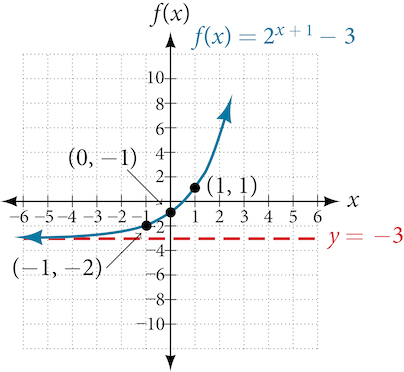
The domain is the range is the horizontal asymptote is
Approximating the Solution of an Exponential Equation
Solve graphically. Round to the nearest thousandth.
Solution
Press [Y=] and enter next to Y1=. Then enter 42 next to Y2=. For a window, use the values –3 to 3 for and –5 to 55 for Press [GRAPH]. The graphs should intersect somewhere near
For a better approximation, press [2ND] then [CALC]. Select [5: intersect] and press [ENTER] three times. The x-coordinate of the point of intersection is displayed as 2.1661943. (Your answer may be different if you use a different window or use a different value for Guess?) To the nearest thousandth,
Graphing a Stretch or Compression
While horizontal and vertical shifts involve adding constants to the input or to the function itself, a stretch or compression occurs when we multiply the parent function by a constant For example, if we begin by graphing the parent function we can then graph the stretch, using to get as shown on the left in Figure 8, and the compression, using to get as shown on the right in Figure 8.
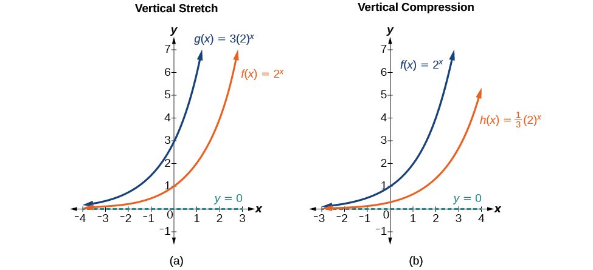
Graphing the Stretch of an Exponential Function
Sketch a graph of State the domain, range, and asymptote.
Solution
Before graphing, identify the behavior and key points on the graph.
- Since is between zero and one, the left tail of the graph will increase without bound as decreases, and the right tail will approach the x-axis as increases.
- Since the graph of will be stretched by a factor of
- Create a table of points as shown in Table 4.
Table 4 Two rows and eight columns. The first row is labeled, “x”, and the second row is labeled, “f(x)=4(0.25)^x”. Reading the columns as ordered pairs, we have the following values: (-3, 32), (-2, 16), (-1, 8), (0, 4), (1, 2), (2, 1), and (3, 0.5). - Plot the y-intercept, along with two other points. We can use and
Draw a smooth curve connecting the points, as shown in Figure 9.
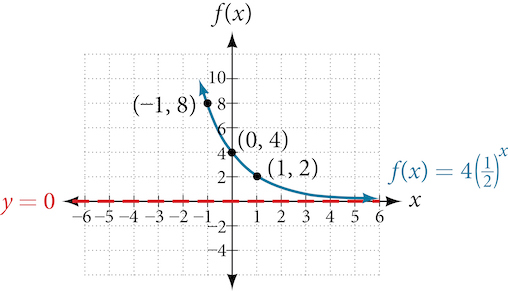
The domain is the range is the horizontal asymptote is
Graphing Reflections
In addition to shifting, compressing, and stretching a graph, we can also reflect it about the x-axis or the y-axis. When we multiply the parent function by we get a reflection about the x-axis. When we multiply the input by we get a reflection about the y-axis. For example, if we begin by graphing the parent function we can then graph the two reflections alongside it. The reflection about the x-axis, is shown on the left side of Figure 10, and the reflection about the y-axis is shown on the right side of Figure 10.
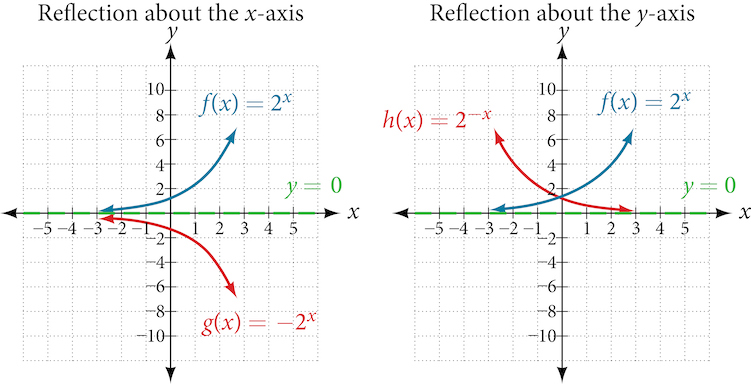
Writing and Graphing the Reflection of an Exponential Function
Find and graph the equation for a function, that reflects about the x-axis. State its domain, range, and asymptote.
Solution
Since we want to reflect the parent function about the x-axis, we multiply by to get, Next we create a table of points as in Table 5.
Plot the y-intercept, along with two other points. We can use and
Draw a smooth curve connecting the points:
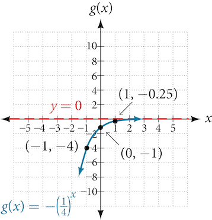
The domain is the range is the horizontal asymptote is
Summarizing Translations of the Exponential Function
Now that we have worked with each type of translation for the exponential function, we can summarize them in Table 6 to arrive at the general equation for translating exponential functions.
| Transformations of the Parent Function | |
|---|---|
| Transformation | Form |
Shift
|
|
Stretch and Compress
|
|
| Reflect about the x-axis | |
| Reflect about the y-axis | |
| General equation for all transformations | |
Writing a Function from a Description
Write the equation for the function described below. Give the horizontal asymptote, the domain, and the range.
- is vertically stretched by a factor of , reflected across the y-axis, and then shifted up units.
Solution
We want to find an equation of the general form We use the description provided to find and
- We are given the parent function so
- The function is stretched by a factor of , so
- The function is reflected about the y-axis. We replace with to get:
- The graph is shifted vertically 4 units, so
Substituting in the general form we get,
The domain is the range is the horizontal asymptote is
Key Equations
| General Form for the Translation of the Parent Function |
Key Concepts
- The graph of the function has a y-intercept at domain range and horizontal asymptote See Example 3.
- If the function is increasing. The left tail of the graph will approach the asymptote and the right tail will increase without bound.
- If the function is decreasing. The left tail of the graph will increase without bound, and the right tail will approach the asymptote
- The equation represents a vertical shift of the parent function
- The equation represents a horizontal shift of the parent function See Example 4.
- Approximate solutions of the equation can be found using a graphing calculator. See Example 5.
- The equation where represents a vertical stretch if or compression if of the parent function See Example 6.
- When the parent function is multiplied by the result, is a reflection about the x-axis. When the input is multiplied by the result, is a reflection about the y-axis. See Example 7.
- All translations of the exponential function can be summarized by the general equation See Table 3.
- Using the general equation we can write the equation of a function given its description. See Example 8.
Section Exercises
Verbal
What role does the horizontal asymptote of an exponential function play in telling us about the end behavior of the graph?
Solution
An asymptote is a line that the graph of a function approaches, as either increases or decreases without bound. The horizontal asymptote of an exponential function tells us the limit of the function’s values as the independent variable gets either extremely large or extremely small.
What is the advantage of knowing how to recognize transformations of the graph of a parent function algebraically?
Algebraic
The graph of is reflected about the y-axis and stretched vertically by a factor of What is the equation of the new function, State its y-intercept, domain, and range.
Solution
y-intercept: Domain: all real numbers; Range: all real numbers greater than
The graph of is reflected about the y-axis and compressed vertically by a factor of What is the equation of the new function, State its y-intercept, domain, and range.
The graph of is reflected about the x-axis and shifted upward units. What is the equation of the new function, State its y-intercept, domain, and range.
Solution
y-intercept: Domain: all real numbers; Range: all real numbers less than
The graph of is shifted right units, stretched vertically by a factor of reflected about the x-axis, and then shifted downward units. What is the equation of the new function, State its y-intercept (to the nearest thousandth), domain, and range.
The graph of is shifted downward units, and then shifted left units, stretched vertically by a factor of and reflected about the x-axis. What is the equation of the new function, State its y-intercept, domain, and range.
Solution
y-intercept: Domain: all real numbers; Range: all real numbers greater than
Graphical
For the following exercises, graph the function and its reflection about the y-axis on the same axes, and give the y-intercept.
Solution
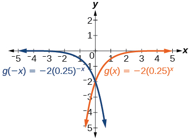
y-intercept:
For the following exercises, graph each set of functions on the same axes.
and
Solution
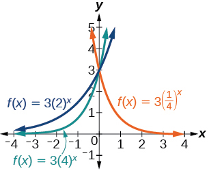
and
For the following exercises, match each function with one of the graphs in Figure 12.
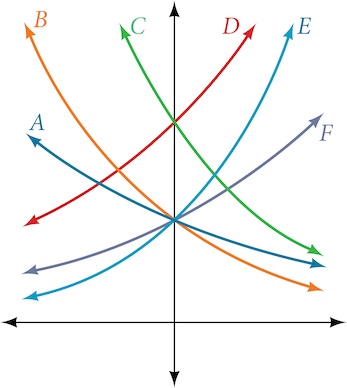
Solution
B
Solution
A
Solution
E
For the following exercises, use the graphs shown in Figure 13. All have the form
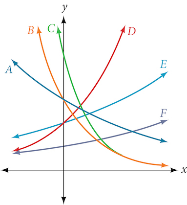
Which graph has the largest value for
Solution
D
Which graph has the smallest value for
Which graph has the largest value for
Solution
C
Which graph has the smallest value for
For the following exercises, graph the function and its reflection about the x-axis on the same axes.
Solution
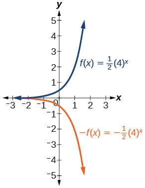
Solution
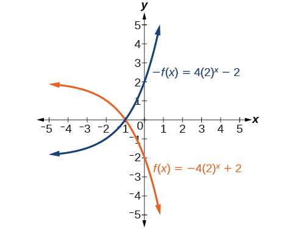
For the following exercises, graph the transformation of Give the horizontal asymptote, the domain, and the range.
Solution
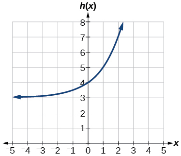
Horizontal asymptote: Domain: all real numbers; Range: all real numbers strictly greater than
For the following exercises, describe the end behavior of the graphs of the functions.
Solution
As ,
;
As
,
Solution
As ,
;
As ,
For the following exercises, start with the graph of Then write a function that results from the given transformation.
Shift 4 units upward
Shift 3 units downward
Solution
Shift 2 units left
Shift 5 units right
Solution
Reflect about the x-axis
Reflect about the y-axis
Solution
For the following exercises, each graph is a transformation of Write an equation describing the transformation.
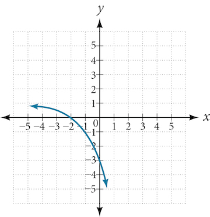
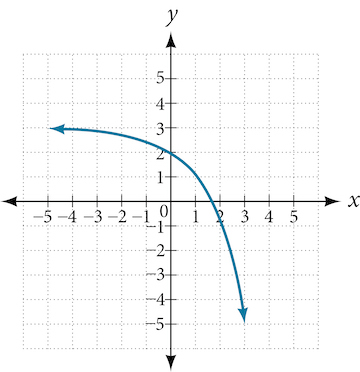
Solution
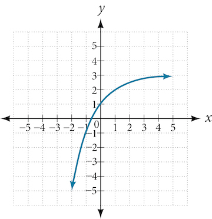
For the following exercises, find an exponential equation for the graph.
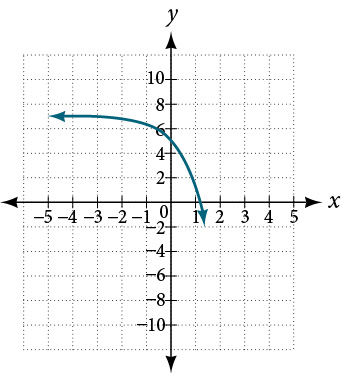
Solution
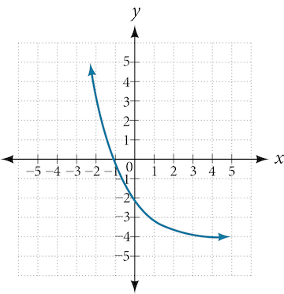
Numeric
For the following exercises, evaluate the exponential functions for the indicated value of
for
Solution
for
for
Solution
Technology
For the following exercises, use a graphing calculator to approximate the solutions of the equation. Round to the nearest thousandth.
Solution
Solution
Extensions
Explore and discuss the graphs of and Then make a conjecture about the relationship between the graphs of the functions and for any real number
Solution
The graph of is the refelction about the y-axis of the graph of For any real number and function the graph of is the the reflection about the y-axis,
Prove the conjecture made in the previous exercise.
Explore and discuss the graphs of and Then make a conjecture about the relationship between the graphs of the functions and for any real number n and real number
Solution
The graphs of and are the same and are a horizontal shift to the right of the graph of For any real number n, real number and function the graph of is the horizontal shift
Prove the conjecture made in the previous exercise.